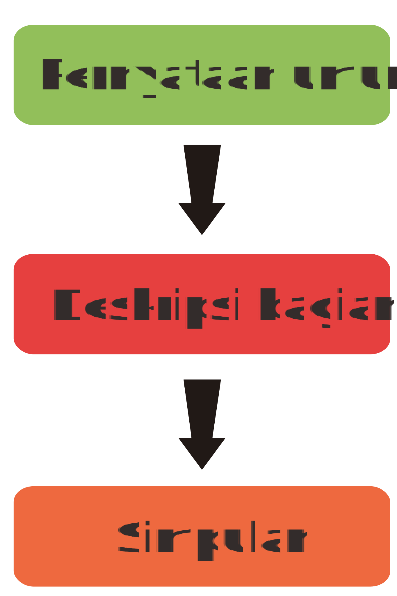

Teks LHO.
Laporan Hasil Observasi

Apa Itu Teks LHO ?
Teks laporan observasi adalah teks yang berfungsi untuk memberikan informasi tentang suatu objek atau situasi, setelah diadakannya investigasi atau penelitian secara sistematis. Nah, laporan hasil observasi dapat berupa hasil riset secara mendalam tentang suatu benda, tumbuhan, hewan, konsep atau ekosistem tertentu.
Struktur Teks LHO
Apa Saja?

-
1
Pernyataan umum
Berisi definisi atau keterangan umum tentang subjek yang dilaporkan, seperti informasi umum (nama latin, asal usul, kelas, informasi tambahan tentang hal yang dilaporkan) -
2
Deskripsi bagian
Berisi perincian hal-hal yang dilaporkan, yaitu tentang perincian fisik makhluk hidup, perincian manfaat, dan nutrisi. -
3
Simpulan
Berisi ringkasan umum mengenai hal yang dilaporkan
Ketahui Kaidah Kebahasaan
Teks LHO
Semangat mengahadapi New Normal? Boleh kok, asal tetap patuhi protokol kesehatan ya! Seperti yang kita ketahui penerapan New Normal membuat kita menjadi lebih longgar untuk beraktivitas di luar rumah, namun kita juga harus ingat bahwa saat ini pandemi masih berlangsung. Kita turut andil dalam menekan penyebaran virus Covid-19 ini, maka dari itu patuhi protokol kesehatan sebagai bentuk cinta kita terhadap tanah air. Terapkan protokol berikut jika masih ingin selamat dari eliminasi alam ini:
Menggunakan frasa nomina yang diikuti penjenis dan pendeskripsi
Menggunakan verba relasional yang digunakan untuk menyatakan definisi
Contoh: ialah, merupakan, adalah, yaitu, digolongkan
Menggunakan verba aktif alam, hal ini untuk menjelaskan perilaku
seperti : bertelur, hidup, makan, tidur, dan sebagainya
Menggunakan kalimat simpleks dan kompleks
Penggunaan kalimat definisi dan kalimat deskripsi
Menggunakan kata keilmuan atau teknis
Seperti : herbivora, degeneratif, osteoporosis, mutualisme, dan lain-lain